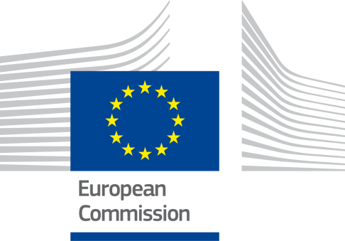
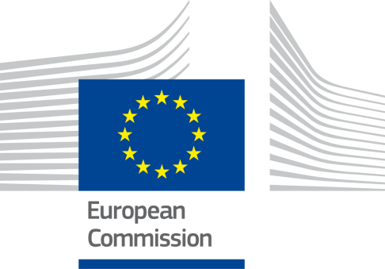
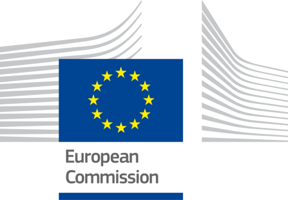

ISA2
Table of Contents
Digital Government Factsheet 2019
Hungary
ISA2
Digital Government Highlights 6
Digital Government Political Communications 7
Digital Government Legislation 11
Digital Government Governance 15
Digital Government Infrastructure 20
Digital Government Services for Citizens 27
Digital Government Services for Businesses 35
Population: 9 773 371 inhabitants (2018)
GDP at market prices: 131 935 million Euros (2018)
GDP per inhabitant in PPS (Purchasing Power Standard EU 28=100): 68 (2017)
GDP growth rate: 4.9% (2018)
Inflation rate: 2.9% (2018)
Unemployment rate: 3.7% (2018)
General government gross debt (Percentage of GDP): 73.3% (2017)
General government deficit/surplus (Percentage of GDP): -2.2% (2017)
Area: 93 000 km²
Capital city: Budapest
Official EU language: Hungarian
Currency: Hungarian Forint HUF
Source: Eurostat (last update: 15 March 2019)
The following graphs present data for the latest Generic Information Society Indicators for Hungary compared to the EU average. Statistical indicators in this section reflect those of Eurostat at the time the Edition is being prepared.
Percentage of individuals using the Internet for interacting with public authorities in Hungary | Percentage of individuals using the Internet for obtaining information from public authorities in Hungary |
Percentage of individuals using the Internet for downloading official forms from public authorities in Hungary | Percentage of individuals using the Internet for sending filled forms to public authorities in Hungary |
The graph below is the result of the latest eGovernment Benchmark report, which monitors the development of eGovernment in Europe, based on specific indicators. These indicators are clustered within four main top-level benchmarks:
User Centricity – indicates to what extent (information about) a service is provided online and how this is perceived.
Transparency – indicates to what extent governments are transparent regarding: i) their own responsibilities and performance, ii) the process of service delivery and iii) personal data involved.
Cross-Border Mobility – indicates to what extent EU citizens and businesses can use online services in another country.
Key Enablers – indicates the extent to which 5 technical pre-conditions are available online. There are: Electronic Identification (eID), Electronic documents (eDocuments), Authoritative Sources, and Digital Post. Digital Post refers to the possibility that governments communicate electronically-only with citizens or entrepreneurs through e.g. personal mailboxes or other digital mail solutions.
These top-level benchmarks are measured using a life-events (e.g. mystery shopping) approach. Eight life events are included in the overall eGovernment performance score. Four of these life events were measured in 2013, 2015 and 2017 and the other four were measured in 2012, 2014, 2016, and again in 2018. The life events measured in 2017 were Regular business operations, Moving, Owning and driving a car and Starting a small claims procedure. The life events measured in 2018 are Business start-up, Losing and finding a job, Family life and Studying.

Source: eGovernment Benchmark Report 2018 Country Factsheets
Digital Government Political Communications
The new Cybersecurity Strategy was adopted at the end of December 2018.
The Digital Success Programme initiated the establishment of the Hungarian Artificial Intelligence and 5G Coalitions.
Digital Government Legislation
No new digital government legislation was adopted in Hungary in the reporting year.
Digital Government Governance
As the legal successor of the Ministry of National Development, the new Ministry for Innovation and Technology became responsible for IT infrastructure development and information society related tasks.
For high level coordination and strategy-making related to infocommunications and eGovernment, the Department for eGovernment and IT Developments of the Prime Minister’s Cabinet Office is in charge instead of the former prime minister’s office.
Digital Government Infrastructure
The Superfast Internet Programme 2.0 was launched in January 2019. It aimed to further develop the networks, to raise the capacity to at least 100 Mbps available anywhere in the country, and to further develop optical networks with Gigabit capabilities to expand the Gigabit broadband network coverage.
70 public administration bodies were connected to the KKSZB Central Government Service Bus interoperability platform in 2018. Altogether, 135 registries and services have been integrated to the platform.
eServices already integrated into the Central Authentication Agent service can be accessed via electronic identification with the use of the Hungarian eID card since 1 February 2018.
The national central eProcurement System was launched in January 2018. Its use became obligatory from 15 April 2018, meaning that paper-based administration of procurements ceased.
Regarding eInvoicing, from 1 July 2018 online data provision became obligatory regarding invoices that include output VAT of more than 100 000 HUF (approximately 320 EUR) issued between domestic taxpayer businesses. For this purpose, the National Tax and Customs Administration (NTCA) developed and launched a central Online Invoice system that can be connected to the financial management software or ERP system of businesses via machine to machine interface, thus the automated data provision does not need bureaucratic steps.
Digital Government Services for Citizens and Businesses
In January 2019, the new Vehicle Service Platform (JSZP) was launched. Clients can now check the data for all vehicles registered in Hungary free of charge on the szuf.magyarorszag.hu portal.
From 1 January 2019, business organisations are obliged to access the electronic administration and use their Company Gate digital mailbox for official communications with the State.
National Infocommunication Strategy 2014-2020
Infocommunication networks, tools, services and competences contribute increasingly to the improvement of the quality of life of citizens, the competitiveness of businesses and the efficiency of state operation. The National Infocommunication Strategy 2014-2020 has given a comprehensive overview on the situation of the Hungarian information society and the ICT market, to define the ideal target situation, and to identify professional trends and development targets in infocommunication technology. The strategy covers components of the digital ecosystem in which any task, backlog, market error or bottleneck can be clearly identified and may be handled more effectively by the state with the help of public policy, regulatory and support policy instruments than through the organic development of the market. The Strategy defined the targets and identified the tools according to the following pillars:
Digital Infrastructure: The government’s firm intention was that every household have internet access of at least 30 Mbps by 2018. The full range of the National Telecommunication Backbone Network was established in 2018. Further goals included the mobile broadband coverage reaching 95% by 2016, and a broadband internet access of at least 20Mbps made accessible for all educational institutions.
Digital Competences: Development of the digital skills of citizens, enterprises (primarily SMEs) and public administration employees. The major objective is that the rate of the digitally illiterate people among the adult population be reduced to 30% by 2020, and that the indicator of regular internet usage should reach 65%. According to the target values set in the strategy, 99% of micro and small enterprises could have internet access by 2020.
Digital Economy: The development of the ICT sector in the narrower sense, electronic (commercial, bank, etc.) services and corporate IT systems as well as the stimulation of R&D and innovation activities. The intention is to double the number of persons attending ICT trainings, as well as increase the value of Hungarian software and services exports by 2020 compared to current indicators. If strategic goals are met, one third of SMEs may administer their transactions online by the end of this decade.
The National Council for Telecommunications and Information Technology, in cooperation with the Ministry of Interior and the Prime Minister’s Office, published the new eGovernment service development guidelines consisting of the following documents, encompassing different projects on developing new eGovernment services:
Services assessment guide;
Criteria and guidelines for designing the order of digitising administrative processes;
Guide for digitising;
Communication guidelines.
The tool for establishing a Digital State is providing the adequate infocommunication background, whereas developing eServices enables the improvement of citizens’ quality of life. As an effort towards these goals, the uniform governmental IT background has been set up and enables citizens and enterprises to manage the full range of their public administration affairs online since 2018.
No political communication was adopted in this field to date.
No political communication was adopted in this field to date.
The new Cybersecurity Strategy was adopted at the end of December 2018 (1838/2018. (XII. 28.) by governmental resolution. It aimed to establish a free, safe, innovative and competitive cyberspace, increase Hungary's competitiveness, introduce innovations, new technologies in a secure manner, and adapt them to the digitised public administration, government and economy. The Strategy created a safer electronic public administration system and innovative development of public services, as well as raise awareness in all areas of society.
No political communication was adopted in this field to date.
No political communication was adopted in this field to date.
Public Administration and Civil Service Development Operational Programme
The Public Administration and Civil Service Development Operational Programme (OP) will invest over EUR 935 million, including nearly EUR 795 million from EU funding (75.7% from the European Social Fund and 24.3% from the Cohesion Fund), to reinforce the services provided by the public authorities. It shall help Hungary increase the efficiency of its public administration through the development of quality public services that are considered essential to attain sustainable growth in line with the Europe 2020 Strategy. The following results are expected from the programme:
400 procedures will benefit from administrative services and end-to-end time reduction;
250 new eGovernance procedures will be developed;
63 800 public servants will participate in competence development programmes;
1 000 local municipalities will be connected to the integrated public administration information system.
Hungarian National Infocommunications Strategy
On a strategic level, the Hungarian National Infocommunications Strategy 2014-2020 (hereinafter NIS 2014-2020) states that interoperability is required between IT systems and services in order to create efficient digital services, and sets the following objectives:
Putting in place a legislative framework for the transferability of infocommunications technologies, elaboration of a system of requirements and recommendations for the application of widely used standards in order to achieve interoperability;
Putting in place a legal framework for cross-border recognition and interoperability of secure eAuthentication systems;
Modernisation of public records and electronic identification (IT and organisational development, interoperability, methodology, human resources, legislation);
Strengthening the cooperation and transferability of databases, performing data cleansing processes, secure data exchange and further increase in data protection.
Apart from technology neutrality and consideration of IT security requirements, development based on software with open source codes needs to be encouraged. The legislative framework was established according to the NIS 2014-2020 with the adoption of the Act CCXXII. of 2015 on eAdministration and trust services (hereinafter eAdministration Act). Pursuant to the eAdministration Act, from 1 January 2018, the cooperating bodies involved in administrative processes shall obtain information (data or documents) from another cooperating body rather than asking the customer (citizen or business) to resubmit it. They must obtain that information by automated data exchange process where possible, or by a simple secure information exchange where it is not possible. According to the eAdministration Act, electronically cooperating organisations are obliged to prepare their information transfer rules, publish them and send them to the Electronic Administration Supervisory Authority (EÜF) within the Ministry of Interior.
Pursuant to the eAdministration Act, the EÜF shall manage and publish the register of the information sources (based on the content of the information transfer rules submitted). The purpose of the register of information sources is to take steps to identify redundant administrative burdens in public services, as well as to enable citizens and any other organisations to find out which public administration organisation keeps what kind of records, and under what procedure and how to claim data.
The Ministry of Interior also set a policy criterion that is in line with most of the EIF recommendations. In case of the development and design of public administration, ICT solutions and services priority comply with eGovernment policy criteria set by the Ministry of Interior concerning the development projects. This also means that alignment with the eGovernment development objectives of the European Union is ensured as much as possible, including the EIF. The Ministry of Interior in its supervisory role regarding governmental ICT and eGovernment projects, ensures that all development projects are made in accordance with the policy principles and objectives as much as possible.
Digital Success Programme
The Digital Success Programme initiated the establishment of the Hungarian Artificial Intelligence Coalition formed on 9 October 2018. It numbers more than 170 member organisations (up from 78 at the beginning), including multinational and domestic businesses, universities, scientific workshops and professional and public administration organisations.
Developing High-Performance Computing infrastructure and ecosystem
Hungary joined the EuroHPC Joint Undertaking in September 2018 as a founding Member State. Since then Hungary has been an active partner in all development programmes of the EuroHPC JU.
Because Hungary’s supercomputer infrastructure is underdeveloped (less than 0.5 PetaFlops total capacity), it lacks the capability to serve the growing needs of R&D and industrial innovation. The Ministry for Innovation and Technology is working to significantly improve the available national HPC capacity. Preparatory work is ongoing to formulate a government decree on the procurement for (about) 15 PetaFlops capacity of a national HPC centre and the necessary building and technology facilities and human capacity for the operation of the HPC. The launch of HPC services based on the new infrastructure is planned for 2021. Our future services are planned to serve both academic and industrial communities, including SMEs.
Hungary is aware of the need to build an eco-system around the HPC centre: consisting of a competence centre, support organisation, awareness agenda and courses, education programs and naturally professional research and innovation teams. In this agenda our major partners are universities and research institutes not only in Hungary but throughout in Europe.
In parallel with infrastructure development and ecosystem building Hungary is working on tightening its Europe-wide links and collaboration in the field of supercomputing within the frames of the EuroHPC Joint Undertaking and a programme like PRACE (Partnership for Advanced Computing in Europe). The EuroHPC JU initiative demonstrates that international joint work is essential to complete a project of this scope.
The growing number of new emerging technologies such as AI, IoT, blockchain, and applications surrounding these new technologies that include smart settlements, autonomous driving, 5G networks, etc., are natural arenas to be served by future supercomputing capabilities.
Electronic administration has been regulated for a wide range of administrative bodies according to the unified principles of the Act No. CCXXII of 2015, and on the general rules of electronic administration and trust services (hereinafter: eAdministration Act). It was rolled out over the two-year period 2016-18.
In order to extend the regulation to all organisations concerned by the eAdministration Act, it became necessary to create a new implementing decree adopted in December 2016, the 451/2016. (XII. 19.) This government decree stipulated a detailed set of rules on eAdministration. This decree contains the detailed rules of electronic administration and electronic communications, regulated electronic administrations services (SZEÜSZ) and central electronic administration services (KEÜSZ) as well as the rules concerning the digitisation of paper-based documents.
Consequently, the Government decree 84/2012 (IV. 21.) on the assignment of certain organisations related to electronic administration was modified.
The aforementioned implementing decree annulled the Government decree 85/2012 (IV. 21.) on the detailed provisions regarding electronic administration. However, in the course of defining the detailed rules of electronic administration and electronic communications, it keeps those provisions that can be reconciled with the provisions of the eAdministration Act. Furthermore, the aforementioned decree replaced the Decree of the Ministry of Informatics and Telecommunication 13/2005 (X. 27.) on the rules for the digitisation of paper-based documents.
Any organisation that took upon itself the application of the eAdministration Act is obliged to apply the new regulation.
eGovernment legislation
The most important laws regulating eGovernment are the following:
Act No. CCXXII. of 2015 on general rules of electronic administration and trust services set out the general rules for electronic administration, the relationship between citizens and public bodies providing eAdministration services, their contact, the renewal of interoperability rules, the legal provisions necessary to implement the eIDAS Regulation (910/2014/EU), as well as the rules of authenticity of electronic and paper-based documents. The eAdministration Act introduced the underlying principles for electronic administration, settled the role of the Electronic Administration Inspectorate (EÜF), and also introduced the so-called regulated electronic administration services – the building blocks for developing eGovernment services.
Act No. CXXI. of 2016, on the amendment of certain acts necessary to develop a single electronic administration system, was adjusted to reflect necessary amendments to sectoral legislation allowing electronic administration according to the eAdministration Act.
Government decree 123/2016. (VI. 7.) on the amendment of government decrees necessary to introduce the E-Filing Portal Service and others related to electronic administration.
Government decree 228/2016. (VII. 29.) on the coordination of IT development of administrative bodies.
Government decree 257/2016. (VIII. 31.) on the ASP system of local governments.
Decree of the Ministry of Interior 25/2016. (VI. 30.) on the amount of administrative service fee to be paid to the trust authority.
Decree of the Ministry of Interior 41/2016. (X. 13.) on the organisations certifying the compliance of tools creating qualified electronic signatures and qualified electronic stamps and the rules regarding their assignment.
Act No. CL. of 2016 on the Code of general administrative procedure.
Government decree 84/2012. (IV. 21.) on assignment of certain organisations related to electronic administration
Decree 13/2011. (XII.27.) of the National Media and Infocommunications Authority on customer protection-related quality requirements of electronic communication services is applicable.
Government decree 335/2005. (XII. 29.) on the common provisions of the document management in public administrative bodies.
Government decree 346/2010. (XII. 28.) on the networks for governmental purpose (National Telecommunications Backbone Network).
Government decree 309/2011. (XII.23.) on the centralised IT and electronic communication services (introduced the National Infocommunications Service Provider Ltd.).
Decree of the Ministry of Innovation and Technology 1/2018. (VI. 29.) on the rules of digital archiving.
Decree of the Ministry of Interior 48/2016. (XI. 28.) on the administrative service fee to be paid for the declaration of regulated electronic administrative services.
Decree of the Ministry of Human Capacities 39/2016. (XII. 21.) on the detailed rules regarding the Electronic Health Cooperation Service Space (EESZT), that includes its obligatory usage.
Act on the Re-use of Public Data
Act No. LXIII. of 2012. on the Re-use of Public Data regulated the re-use of public data and public cultural data held by public bodies (and private bodies with public service mission) for the purpose of re-use by private persons or entities.
Act on Informational Self-determination and Freedom of Information
Act No. CXII of 2011. on Informational Self-determination and Freedom of Information (also available in English) was a combined Data Protection and Freedom of Information Act. This Act sets rules and safeguards the processing of personal data of public and private bodies. Its application was overseen by the National Data Protection and Freedom of Information Authority. Due to this law, access to public information is free upon request, plus public bodies are also obliged to proactively publish fundamental information on their operation on their websites. Government Decree 305/2005. includes detailed rules on the electronic publication of public data and also establishes a ‘public data search system’.
Act on general rules of electronic administration and trust services
The Act No. CCXXII. of 2015. on general rules of electronic administration and trust services (eAdministration Act) set out the general rules on electronic signatures. The act introduced the legal provisions necessary to implement the eIDAS Regulation (910/2014/EU), as well as the rules of authenticity of electronic and paper-based documents. (The Act repealed previous legislation on electronic signatures.)
In the course of the definition of new rules, the application of electronic stamps becomes obligatory instead of organisational signatures. This is to be achieved in the context of the provisions of the regulation No. 910/2014 of the European Parliament and of the Council of 23 July 2014 on electronic identification and trust services for electronic transactions in the internal market, repealing Directive 1999/93/EC.
Further detailed provisions are to be found in several other decrees:
Government decree 137/2016. (VI. 13.)
Government decree 137/2016. (VI. 13.) sets outs the requirements concerning electronic signatures and stamps for providing electronical administration services.
Government decree 451/2016. (XII. 19.)
In order to extend the regulation to all organisations concerned by the Electronic Administration Act, an implementing decree, the Government decree 451/2016. (XII. 19.), on the detailed rules of electronic administration was issued.
Decree of the Ministry of Interior 24/2016. (VI. 30.)
Decree of the Ministry of Interior 24/2016. (VI. 30.) established the detailed requirements concerning trust services and their providers.
Act on the electronic information security of state and municipal bodies
Act No. L. on the electronic information security of state and municipal bodies is the legal act dealing with cybersecurity aspects of digital government. Electronic information systems covered by this law must be implemented and ensured towards:
The confidentiality, integrity and availability of data and information processes in the electronic information system;
The integrity and availability of the electronic system and its elements’ closed, full, continuous and proportionate protection.
Act on Citizens’ personal data and address of registration
The Civil Registry, Act No. LXVI of 1992 on Citizens’ Personal Data and Address of Registration defined the content, concept and functions of the registry. It regulated the organisation of records, competence and jurisdiction rules, the data records, reporting from the registry, the registration process, data security and other provisions. Another part of Data Sources worth mentioning where it is clearly defined how the Civil Registry collects data from different sources.
Act on Public company information, company registration and winding-up proceedings
In the case of the Business Registry, the primary piece of legislation in Hungary is Act No. V of 2006 on Public Company Information, Company Registration and Winding-up Proceedings. The purpose of this Act was to lay down the appropriate legal framework to facilitate the foundation and registration of companies and for providing full public access, directly or by way of electronic means, to information from registries of official company records. The Act also contains related definitions such as company or corporate name, though not exclusively. Other important aspects covered in this Act are access to company documents submitted on paper or by electronic means, access to company documents converted into electronic format or the specific contents of the Business Registry, and the registration proceedings.
Government Decree on Electronic Public Procurement
Regulations governing the use of electronic means in public procurement were articulated in Government decree 257/2007. (X. 4.) on public procurement sub-procedures which may be conducted in electronic way. The Decree of the Ministry of Justice 27/2008. (XII. 10.) on detailed rules regarding the operation of the electronic public procurement system complemented Act No. CVIII. of 2011 on Public Procurement.
eCommerce legislation
Decree of the Ministry of Justice 25/2006. (V. 18.) on the electronic payment of fees as for public notices in the administration of business processes.
Decree of the Ministry of Finance 46/2007. (XII. 29.) on electronic invoices.
Decree of the Ministry of Justice 24/2006. (V. 18.) on certain aspects of the electronic business registration procedure and the electronic business register.
Decree of the Ministry of National Economy 23/2017. (VI. 30.) on the identification of invoices, simplified invoices and receipts for tax administration, as well as on the tax authority’s inspection of invoices stored in electronic form.
Act No. CVIII. of 2001 on Electronic Commerce and Information Society Services. Adopted on 18 December 2001, the Act implemented EU Directive 2000/31/EC on certain legal aspects of information society services, in particular electronic commerce. The Act governed the eCommerce legal relationships of individuals, legal entities and organisations without legal personhood.
eAdministration Act - Interoperability
The Third Part of the eAdministration Act regulates cooperation in the field of information technology between bodies providing electronic administrative service. It also regulates interoperability.
The new eAdministration Act aims to achieve interoperability and cooperation between state registries. It strongly encourages the bodies to obtain information, decisions and statements from cooperating bodies if the information, decisions or statements are made or already obtained by these cooperating bodies by electronic means. Cooperative bodies include government entities, local authorities, other legal entities vested with administrative competence, court, public notaries, court bailiffs, public prosecutors, most of the public utility companies, public service providers and public sector companies. The legislation allows private sector entities to join this cooperation by considering themselves to be bound by the regulations of the Act.
No legislation was adopted in this field to date.
Deputy State Secretary for Informatics, Ministry of Interior
The Deputy State Secretary for Informatics in the Ministry of Interior is responsible for tasks related to policy and strategy-making in public administration IT infrastructure, eGovernment services, modernising public administration and the information society.
| Sándor Pintér Minister of Interior
Contact details: Ministry of Interior József Attila utca 2-4. 1051 Budapest, Hungary Tel.: +36-1-441-1717 E-mail: miniszter@bm.gov.hu Source: http://www.kormany.hu/en/ministry-of-interior/the-minister |
| Károly Hajzer Deputy State Secretary for Informatics, Ministry of Interior
Contact details: Ministry of Interior József Attila utca 2-4. 1051 Budapest, Hungary E-mail: karoly.hajzer@bm.gov.hu Source:http://www.kormany.hu/hu/belugyminiszterium/helyettes-allamtitkarok |
Deputy State Secretary for Infocommunication, Ministry for Innovation and Technology
The Deputy State Secretary for Infocommunication of the Ministry for Innovation and Technology is responsible for tasks related to policy and strategy-makinginn the IT infrastructure development and the information society.
Permanent State Secretary of the Cabinet Office of the Prime Minister
The Permanent Secretary of State is responsible for the coordination of tasks related to eGovernment and information technology policy and strategy making. The Cabinet Office is responsible for approving governmental IT related procurements.
Deputy State Secretary for Informatics, Ministry of Interior
The Deputy State Secretary for Informatics of the Ministry of Interior is coordinating the policy and strategy making on public administration IT infrastructure, development of eGovernment services, modernising the public administration and the information society with implementing and spreading of eGovernment, and the codification of legal measures related to electronic means of public administration, the use of electronic signatures, the use of electronic administration services and the interoperability of state- and local-government owned registries.
Deputy State Secretary for Infocommunication, Ministry for Innovation and Technology
The Deputy State Secretary for Infocommunication of the Ministry for Innovation and Technology is responsible for coordinating IT infrastructure development and information society related tasks.
Deputy State Secretary for Registries’ Management of the Ministry of Interior
The Deputy State Secretary for Registries’ Management of the Ministry of Interior took over the activities of the former Central Office for Administrative and Electronic Public Services’ (KEKKH) related to data management and data processing, together with the maintenance of public registers.
Deputy State Secretary for Informatics, Ministry of Interior
The Deputy State Secretary for Informatics of the Ministry of Interior is responsible for the development of public administration IT infrastructure, eGovernment services, modernising the public administration and the information society with the implementation and spreading of eGovernment, the use of electronic signatures, the implementation of regulated electronic administration services and the interoperability of state- and local-government owned registries.
National Infocommunication Service Provider Ltd. (NISZ Zrt.)
Functioning under the control of the Ministry of Interior, the fully state-owned National Infocommunication Service Provider Ltd. is the main IT service provider for Hungarian government organisations. Apart from maintaining the government’s IT infrastructure and services, its strategic goals also include the development of eGovernment solutions.
Part of the former activities that used to be part of KEKKH, such as the IT infrastructure, the provision of regulated administrative services and the delivery of eGovernment services, have been merged into the fully state-owned National Infocommunications Service Provider Ltd. (NISZ Zrt.) functioning under the control of the Ministry of Interior.
Deputy State Secretary for Infocommunication, Ministry for Innovation and Technology
The Deputy State Secretary for Infocommunication in the Ministry for Innovation and Technology is responsible for the development of ICT infrastructure and an information society in the country.
Governmental Information Technology Development Agency (KIFU)
The Governmental Information Technology Development Agency (KIFU) serves as a framework for the development and operation of the research network in Hungary. At the same time, the National Information Infrastructure Development (NIIF) programme, in accordance with international practices, plays a leading role in the development and introduction of the most advanced networking technologies in Hungary. In this way, the programme fulfils a deterministic function in the nation-wide development of infocommunication technologies. While providing an up to date and competitive infrastructure for academic and research community, the programme also serves as a pilot for new networking technologies and applications for wider development efforts in the country.
Development of community Internet access points, and the expansion of their service portfolios (Digital Success Point Network)
Within the framework of the measure, the government supported the development of existing community Internet access points, while establishing new ones via broadening the portfolio and developing their infrastructure, tools and services. This afforded the opportunity for citizens who are not connected to become part of the digital world. The plan was to support at least 1 500 community Internet access points (Digital Success Point) country-wide.
By the end of 2018, the aim of the project was fulfilled with, 1 500 Digital Success Programme Points were selected and the technical device installation was completed.
More than 1 500 mentors were trained to help citizens who needed assistance to use ICT or electronic public services.
Central Office for Administrative and Electronic Public Services
On 1 January 2017, the Ministry of Interior’s Deputy State Secretary for Registries’ Management assumed responsibility for most of base registries.
Under the control of the Ministry of Interior, the Central Office for Administrative and Electronic Public Services (KEKKH) was responsible for the data management and data-processing activities of most base registries in Hungary. These registries include the Personal Data and Address Registry, the Road Traffic Registry and the Criminal Registry. The key objectives of this office were to provide quick and reliable information, safe and accurate data management and to strengthen customer-centricity. However, pursuant to the final decision of the Hungarian government (Government Decision No. 1312/2016 (VI.13.) within the framework of the state administration system reform, the KEKKH was terminated on 31 December 2016 and were integrated into the Ministry of the Interior as Deputy State Secretariat for Registries’ Management.
The further development of national data asset registries and creation of a higher-level service capability is under way in the National Data Asset Service Development (NAVASZ) project.
State Audit Office of Hungary (SAO)
The State Audit Office (SAO) is an independent audit organisation established by the Hungarian Parliament. Based on the Constitution and relevant legislation, the primary tasks of SOA are to audit and evaluate the operation of the public finances system and its development. Audits of public expenditures are performed according to the criteria of legality, effectiveness and efficiency. In particular, SAO is responsible for performing audits on the development of eGovernment services. The focus is placed the strategic validity of developments, the harmony of the national development goals and EU regulations, as well as the regulatory, management and control environment of the operation of services.
National Data Protection and Freedom of Information Authority
The National Data Protection and Freedom of Information Authority is an independent institution with competencies over both the public and private sectors. It is responsible for overseeing and setting the rules, as well as safeguarding the processing of personal data by public and private bodies. The main tasks of the Parliamentary Commissioner include: investigations of petitions from citizens; supervision of data controlling; proposing relevant legislation and amendment of laws; and promoting a culture and knowledge in the respect of fundamental rights.
Deputy State Secretary for Informatics, Ministry of Interior
The Deputy State Secretary for Informatics of the Ministry of Interior is responsible for tasks related to the policy and strategy making on regional and local public administration IT infrastructure, eGovernment services.
State Secretary for Regional Public Administration, Prime Minister's Office
The State Secretary for Regional Public Administration is responsible for strategy and policy-making in the development of local public administration as well as governmental one-stop-shops.
Permanent State Secretary of the Cabinet Office of the Prime Minister
The Permanent Secretary of State is responsible for the coordination of tasks related to eGovernment and information technology policy and strategy making.
Deputy State Secretary for Informatics, Ministry of Interior
The Deputy State Secretary for Informatics of the Ministry of Interior is responsible for the coordination of tasks related to regional and local public administration IT infrastructure and the development of eGovernment services.
State Secretary for Regional Public Administration, Prime Minister's Office
The State Secretary for Regional Public Administration is responsible for the coordination of the development of regional and territorial public administration as well as the functioning of governmental one-stop-shops.
Permanent State Secretary of the Cabinet Office of the Prime Minister The Permanent Secretary of State is responsible for the coordination of tasks related to eGovernment and information technology policy and strategy making.
Deputy State Secretary for Informatics, Ministry of Interior
The Deputy State Secretary for Informatics of the Ministry of Interior is responsible for the development of public administration IT infrastructure, eGovernment services, modernising the public administration and the information society with implementing and spreading of eGovernment, the use of electronic signatures, the implementation of regulated electronic administration services and the interoperability of state and local government-owned registries.
Hungarian National Association of Local Authorities (TÖOSZ)
The National Association of Local Authorities (TÖOSZ) is the representative organisation of the majority of Hungarian municipalities, promoting the interests of its members towards central government and providing them with support services.
Association of Cities of County Rank (MJVSZ)
The Association of Cities of County Rank (MJVSZ) represents the collective rights of Hungary’s largest cities (23 cities of county rank), protecting and promoting their interests, developing the operation of local self-governments, and cooperating with other national and international associations of local governments in support of the Government's central eGovernance system and policy.
National Association of Intelligent Local Authorities (ITOSZ)
The National Association of Intelligent Local Authorities (ITOSZ) is dedicated to promoting cooperation between local authorities in the field of ICT and information management stipulated and implemented centrally.
No responsible organisations were reported to date.
State Audit Office of Hungary (SAO)
The audit mandates of the SAO cover, among others, the financial management of social security and separated state funds, local governments and minority self-governments, regional development councils of the counties, economic chambers, public foundations, non-profit organisations, pension funds, credit institutions, institutions of higher education, political parties, their foundations and churches.
No responsible organisations were reported to date.
A new customisable electronic administration user interface, SZÜF was launched in January 2018 to replace the former magyarorszag.hu (hungary.hu) portal as the point of single contact portal of Hungary. The new SZÜF portal has a more modern design as well as a life-event based approach to publish existing eGovernment services.
According to the eAdministration Act, all public administration bodies providing eGovernment services are obliged to publish their services on the SZÜF portal. For this purpose, the portal has a specific content management solution available for all connected public administration bodies, and it provides online form editor functionalities as well.
From the client’s side, the services of the portal can be used after electronic identification and authentication either by their Client Gate account or their national eID card. Clients can access their personal digital post-box, or if they are officially assigned to a Company Gate or Office Gate digital post-box, they can also access them from the SZÜF portal. The portal includes a personal calendar, and among the eGovernment services available on the portal, favourites can be saved separately.
For the connected service providers (the bodies obliged to provide eGovernment services by the eAdministration Act), the portal provides service management functionality as well as a built-in online form editing and management system.
Magyarorszag.hu
Hungary's eGovernment portal, Magyarorszag.hu was launched in September 2003. It is at the same time an institutional portal and a services catalogue. It generates and summarises content from 46 government websites. On 1 April 2005, the portal went fully transactional with the launch of a gateway called the Client Gate. This gateway allowed users to securely identify themselves online and gain access to transactional eGovernment services through the portal. Since early 2007, there has also been the possibility of securing a bidirectional document-based communication between the public authorities and citizens on the Government portal through the Client Gate. Citizens can download a General Form Filler application from the Government portal and fill out electronic forms for any public authority in offline mode. After completing any form, they can go online and sign in at the Client Gate. Through its Secure Electronic Document Transmission Service, they can send the form to the addressed authority in a secure and authentic way. As part of their Client Gate, citizens also have a notification storage where they can receive documents from public authorities and store the documents received for unlimited time.
Open data portal
As for the re-use of Public Sector Information, the specification of the data structure of a new data re-use portal was finished in December 2017 and the new development started. The open data portal was launched in 2019.
Kormany.hu
The kormany.hu website is the official information homepage of the Government of Hungary, constantly updated with the latest news, events and multimedia coverage concerning the cabinet activity. In addition, the Documents' section contains information material that the government must publish according to law, and various other publications of interest to citizens. After registration, journalists can use further features under Press menu, enabling them to follow live press conferences and download high-resolution photos and videos.
The website’s public test phase was launched on 14 January 2011. This phase will end upon completion of migrating data from ministries’ websites and when the necessary corrections have been carried out.
e-Egeszsegugy.gov.hu
The state-of-the-art IT communication and collaboration platform, the Electronic Health Cooperation Service Space (EESZT) enables information systems and health professionals in the sector to work together. Its services are based on a cloud-based centralised platform and service-oriented architecture (SOA). The system can electronically store information about patients (health status, treatments, etc.) and provides access for doctors, pharmacists, therapists, nurses, etc. working in different institutions to use the same data. Since 1 November 2017, all publicly financed health care providers (general practitioners; specialist care institutions) and pharmacies are obliged to use EESZT services to provide faster, more convenient and more efficient patient care. From 1 November 2018, private healthcare providers were obliged to join the EESZT system. The National Ambulance Service also joined the service on this date.
Service features include:
Record patient care events in the event catalogue;
Upload patient documents to eHistory (so the doctor is able to consult them);
Upload prescriptions to the ePrescription system so they can be consulted;
Option of making queries concerning referrals from the eReferral system;
Upload and consult the patient’s eProfile.
Pharmacies can access the ePrescription system to query the details of the patient’s medical prescriptions.
Doctors, nurses and pharmacists using medical systems connected to the EESZT use its services through their own regular IT systems. Previous IT systems were updated to enable the communication with the new eHealth services. EESZT services are only available to the employees of those institutions which are connected to the system after authentication.
The connection must be initiated by the aforementioned institutions with respect to deadlines set in the Decree of the Ministry of Human Capacities. The health care providers can upload and access patient data after the connection is established. (Previous patient data prior to the establishment of the connection is not yet available.)
Since December 2017, after authentication on the Citizen Portal, everyone can access their eProfile data, their event catalogue (which is a list of the medical care services received in the institutions connected to the EESZT) and their patient records and documents, including eReferrals and ePrescriptions.
Running from 2015 the Superfast Internet Programme has the goal of providing at least 30Mbps broadband connection available in every part of Hungary. As part of the programme 500 thousand new network termination points were established by the end of 2018 with further developments under way. The Superfast Internet Programme 2.0 was launched in January 2019. It aimed to further develop the networks, raise the capacity to at least 100 Mbps available anywhere in the country, and further develop optical networks with Gigabit capabilities to expand the Gigabit broadband network coverage.
National Telecommunications Backbone Network (NTG)
The National Telecommunications Backbone Network (NTG) is a secure and extensive country-wide broadband network forming the basic infrastructure of electronic government in Hungary. Launched in 2012 with the upgrade of the former Electronic Government Backbone (EKG - launched in 2004), this high-speed network connects the 19 county seats with Budapest providing the central administration, as well as regional institutions with a secured and monitored communication infrastructure, supporting data communication, Internet access, electronic mail, government intranet and other services.
Central Government Service Bus (KKSZB)
By April 2019, 85 public administration bodies were already connected to the KKSZB Central Government Service Bus interoperability platform. In total, 279 registries and services have been integrated to the platform including 27 registries enumerated by Government decree 451/2016. (XII. 19.) on the detailed rules of electronic administration (the implementing decree of the eAdministration Act). The Hungarian Central Governmental Service Bus (KKSZB) is an interoperability platform that aims to ensure a service-oriented and standardised connection between the national base registries and the different specific public administration information systems. This is achieved through unification of the communication methods.
KKSzB makes it possible to connect systems with different technological, operational and integrational levels, as well as to reduce redundant data storage and data-integrity errors resulting from this practice. KKSzB ensures the electronic communication, interoperability and secure data exchange of authentic data among the public administrative authorities.
It is possible to join KKSzB as a service provider and as a client at the same time. This makes it technically possible for applications targeted at citizens and businesses to reach all services provided by the connected service providers via KKSzB, so long as they have permission to do so.
The pilot period began on 31 March 2017 with the publication of two already existing eGovernment services on KKSzB (the registry of private entrepreneurs and the registry of parking permits). The trial was deemed a success.
Another ten main base registries maintained by the Ministry of Interior were connected to the KKSzB in October 2017 and were available for testing until the end of December 2017, after which they were published as live services on the KKSzB.
The KKSzB online since 1 January 2018 makes possible the replacement of today’s spiderweb-like architecture in the realm of communication between base registries and specific sectoral systems, raising the possibility of establishing new connections in a much easier way. Connected registries have been available through the KKSzB technical interoperability platform since January 2018. Most of the Public Administration stakeholders are expected to connect to the KKSzB throughout 2018 according to their own ongoing development projects.
Municipality ASP
Following the successful Municipality ASP pilot project in 2015-2016, with approximately 100 municipalities involved, the nationwide expansion of the central application service provider for municipalities, and further development of the available applications launched in 2016 (Municipality ASP 2.0 project), continued throughout 2017. The goal of the central ASP for municipalities was to provide modern, integrated and cost-effective state of the art IT solutions for local governments. It was based on the application service provider’s central hardware and software infrastructure, fostering standardised internal operation of the local governments and a common platform-based provision of local eGovernment services to citizens and businesses.
After completion of the first phase of expansion, more than 1 700 municipalities were connected to the system in January 2017, with another 1 300 municipalities gaining access within the next twelve months. In fact, since January 2018, 2 994 local municipalities have joined the integrated application portfolio (financial management software, municipal tax software, document management software, industrial and commercial management software, property cadastre, eAdministration web portal and the online form management). More than 93% of local municipalities and 20 000 users a day were using the same centrally managed software during their daily work, which represented great strides regarding the interoperability between local governments.
Based on the centrally provided integrated back-office software, through the local eAdministration portal it is possible to provide local eGovernment services on a single platform. For this purpose, the ASP Centre provides more than 50 online form templates for different kinds of services that can be locally customised and published on the Municipality ASP’s eAdministration portal. (If there is no online form, the portal links the user directly to the e-Papír eDelivery service.)
Users log into the local eAdministration portal with their official Hungarian eID methods like the Client Gate account or national eID card. Online forms are automatically prefilled with personal data, addresses, personal tax ID number, health insurance number, personal e-mail address and telephone number from the respective base registries – a great advance in the application of the once-only principle as well as an improvement of data quality on the local government level.
During the third round of extension on 1 January 2019, the remaining 203 municipalities joined the Municipality ASP service as users (out of which 39 municipalities did not give up all their previous IT systems, and only use a part of the ASP’s services). Since then practically all 3 197 Hungarian local governments have been indicted into the centrally provided service. The number of users of the Municipality ASP system at the municipalities has now reached more than 31,000 persons.
Since April 2005, Hungary had a comprehensive central identification solution (Client Gate) for the identification of citizens for electronic transactions carried out between public authorities and citizens. However, there has not yet been a comprehensive solution for the identification of citizens in electronic transactions carried out between public authorities. The Client Gate is capable of identifying citizens for any public authority that connects to it.
Central Authentication Agent
In January 2016 a new central identification solution, the Central Authentication Agent, was launched, supporting the use of different electronic identification and authentication services. It included the already existing Client Gate, and the newly introduced national eID card, as well as the Partial Code Telephone Authentication. According to current plans, the eIDAS authentication will be also made available within the Central Authentication Agent.
eID
Since February 2018, eServices already integrated into the Central Authentication Agent service can be accessed via electronic identification with the use of the Hungarian eID card. The Hungarian eIDAS node is under development and the preparation of the notification of the Hungarian electronic identification means (eID card) is in progress. In January 2019, the number of eID cards issued since its launch in January 2016 reached 4 million. The number of Client Gate accounts reached 3.7 million in January 2019.
Public Procurement legislation
The control and management of public procurement and electronic procurement issues are divided in Hungary. The public procurement law is prepared by the Ministry for Innovation and Technology. The Directorate of Central Public Procurement and Services is responsible for centralised public procurements. The monitoring of public procurement is carried out by the Ministry for Innovation and Technology (in procurement procedures financed by domestic budget), the Prime Minister’s Office (in procurement procedures financed by the EU budget) and the Public Procurement Authority subordinate to Parliament (monitoring of contract and award notices, etc.). As electronic procurement is a part of the development of electronic government, the Prime Minister’s Office is also involved.
System for eProcurement infrastructure
There is currently no central eProcurement infrastructure in Hungary. However, the government decree 257/2007. (V.25.) on electronic procurement and electronic auctions established a new system for eProcurement infrastructure, which enabled service providers from the market to provide several eProcurement services for the procuring public bodies. The decree also establishes the rules of electronic auctions, enabling eAuctioning in several procurement processes. The Government is currently examining further possibilities of eProcurement development, including the long-term possibility of establishing a central public procurement system for centralised procurements. This will support electronic catalogues, electronic auctions and dynamic purchasing for central government bodies (e.g. ministries, etc.). The development of the new website of the Directorate of Central Public Procurement and Services is currently in progress. Hungary also takes part in the PEPPOL project and in several EU workgroups.
The national central eProcurement System was launched in January 2018 and its use became obligatory from 15 April 2018. At that point the paper-based administration of procurements ceased.
eInvoicing legislation
Since July 2018, eInvoicing became obligatory for transactions included output VAT of more than 100 000 HUF (approximately 320 EUR) issued between domestic taxpayer businesses. For this purpose, the National Tax and Customs Administration (NTCA) developed and launched a central Online Invoice system connected to financial management software or the ERP system of businesses via machine to machine interface. In case of paper invoices, the data provision must be done manually within the use of the online service within five days. This also encourages businesses to turn to use eInvoicing. The NTCA also provides an online invoicing solution free of charge mainly for SME-use that can be used to issue eInvoices as well as paper invoices, and automatically sends the data of the invoice to the NTCA regardless the amount of the included output VAT. This also helps to reduce administrative steps.
No particular infrastructure in this field was reported to date.
No particular infrastructure in this field was reported to date.
No particular infrastructure in this field was reported to date.
The TAKARNET network
The Hungarian Land office of the unified real estate registration system in Hungary, the TAKARNET network, is an intranet-like network of the land offices. It connects all official entities involved in the land administration sector and provides online access to the continuously updated land registration data. Furthermore, the network provides online access for external users (registered and authorised) and has been up and running since April 2003. Depending on their registered rights, users have access to data ranging from all registered data regarding Hungary’s lands and properties to a more limited subset of information.
The improvement of the online case management through TAKARNET allowed the Hungarian land registration data supply/service to reach the third level on eGovernmental service in the qualification scale defined by the EU (a service which provides interaction from both sides).
The services provided by the TAKARNET network include the request of documents, the retrieval of non-certified copies of the title deed, eCertified copies of the title deed, map copies, change of personal information and guidance for installing the eSignature programme.
Registering to the portal has to be done in person at any government office since it requires a personal customer portal ID. In case of ownership of a valid identity card electronically, the process is quicker.
The Association Register
The Association Registry helps to connect associated public administration registries and professional systems via an interoperable programmed service interface, creating interoperability between full sets of data and facilitating the exchange of data based on the encrypted contact code. To protect personal data, the Association Registry does not include any personal information or other sectoral ID, the encrypted contact codes are used instead. This is due to strict Hungarian privacy rules prohibiting the use of a single identification number for individuals. Currently, the number of items contained in the Association Registry is 13.5 million, from which 8.2 million are generated as encrypted contact code based on the ID cards (ID item) and 2.8 million are generated as encrypted contact code based on passports (Passport items).
Electronic Register of Registers (NyENy)
The Electronic Administration Supervisory Authority (EÜF) in accordance with the law on the general rules of electronic administration and trust services (the eAdministration Act) and Implementing Regulations shall manage and publish the register of the information sources (based on the content of the information transfer rules submitted) and the List of Data and Document Titles. The purpose of the register of information sources is to take steps to identify redundant administrative burdens in public services, as well as to enable citizens and other organisations of which public administration organisations keep what kind of records, under what procedure, and how to claim data.
NyENy is a registration system where primarily the information transfer rules can be prepared and recorded, and also the register of the information sources and the List of Data and Document Titles can be managed.
NyENy helps to develop the interpretation of standard definitions, to simplify the process of administration, to extend the recent information system techniques and technological solutions, and the orientation of the clients (citizens or representatives of public services).
The information in this section presents an overview of the basic public services provided to the citizens. These were identified taking inspiration from Your Europe, a website which aims to help citizens do things in other European countries – avoiding unnecessary inconvenience and red tape in regard to moving, living, studying, working, shopping or simply travelling abroad. However, the categories used in this factsheet aim to collect a broader range of information, focusing therefore not only on cross-border services, but also on national services.
The groups of services for citizens are as follows:
Travel
Work and retirement
Vehicles
Residence formalities
Education and youth
Health
Family
Consumers
Documents you need for travel in Europe | |
Passport | |
Responsibility: | Central Government: Ministry of Interior, Central Office for Administrative and Electronic Public Services |
Website: | |
Description: | Information is available on the websites. Citizens can set an appointment date online for personal administration, but in some cases. It is possible to initiate the administration online (for example the replacement of a passport in case of loss/theft or when applying for a second passport). |
eTickets | |
Responsibility: | MÁV Hungarian State Railways company |
Website: | |
Description: | In July 2018, the possibility of purchasing eTickets was launched within the ‘Vonatinfo’ mobile application of the MÁV Hungarian State Railways company. Tickets purchased within the app are 10 percent cheaper than those bought personally at the cashier, and for some connections that are usually less popular (usually early in the morning or late in the evening) the discount is 20%. |
Working abroad, finding a job abroad, retiring | |
Job search services by labour offices | |
Responsibility: | Central Government: Ministry of Finance, National Employment Service |
Website: | |
Description: | The website of the National Employment Service makes it possible to search amongst and apply for positions found in the database of the National Employment Service and its regional and local divisions. There is also a new integrated Virtual Job Market Portal for the same purpose with a more user-friendly interface. |
Professional qualifications | |
Professional qualifications | |
Responsibility: | National Employment Service |
Website: | |
Description: | Information on professional qualifications can be found online on the National Employment Service’s portal. |
Unemployment and Benefits | |
Unemployment benefits | |
Responsibility: | Central Government: Ministry for National Economy, National Employment Service |
Website: | |
Description: | The information necessary to start the procedure to obtain unemployment benefits is available on a publicly accessible website managed by the service provider, or by the administrative competent level. |
Taxes | |
Tax Services | |
Responsibility: | Central Government, National Tax and Customs Administration |
Website: | |
Description: | The central eGovernment portal of Hungary Magyarorszag.hu provides access to all the following services: services for employers and employees; personal annual tax declaration and company tax declaration; VAT declaration; company registration (via an attorney-at-law); statistical data provision; customs declaration; eProcurement; permissions related to environment protection. Several forms are available online such as tax declaration, notification, account services, healthcare and social status, or company registry either as intelligent online forms or there are still several forms available for download that can be filled in by using a JAVA-based framework programme. |
Income tax | |
Responsibility: | Central Government: Ministry of Finance, National Tax and Customs Administration |
Website: | |
Description: | The website offers users the ability to declare their taxes online. No paperwork is necessary for completion of the procedure. The online platform complies with the once-only principle, and uses intelligent online forms where information is already prefilled for the user by the National Tax and Customs Administration based on the official data by the employers. The goal is that citizens only have to validate the pre-filled form online; based on information already submitted. In case the citizen had other economic activities, the relevant fields can be added easily by the user. |
Local taxes | |
Responsibility: | Central Government: Ministry of Finance, National Tax and Customs Administration, Hungarian State Treasury; Local governments |
Website: | |
Description: | The Municipality eAdministration point of single contact portal provides several eServices for local taxation for all connected local governments (practically 100% of the Hungarian local governments from 1 January 2019). Intelligent online forms are available to declare local taxes. The online platform complies with the once-only principle, as the forms are partly prefilled for the user by the service from the connected base registries and the Municipality ASP’s back-office services. The local tax balance can be checked here. ePayment was also to be introduced in 2019. |
Cars | |
Vehicle Service Platform (JSZP) | |
Responsibility: | Central Government: Ministry of Interior |
Website: | |
Description: | In January 2019 the new Vehicle Service Platform (JSZP) was launched. Clients can check the data of vehicles free of charge on the szuf.magyarorszag.hu portal. Available data includes mileage, registration, vehicle origin, validity of vehicle insurance, and damage history data for damages occurring after 1 January 2019, as well as photographic documentation of the technical examination and authenticity examination. |
Driving licence | |
Driver’s licence | |
Responsibility: | Central Government: Ministry of Interior |
Website: | |
Description: | Information is available upon request, the replacement of the stolen/lost driving license can be applied for, and citizens can set an appointment date online for personal administration as well. There is also a notification service available for alerting the citizens when their driving licence is about to expire. |
Insurance | |
Vehicle Service Platform (JSZP) | |
Responsibility: | Central Government: Ministry of Interior |
Website: | |
Description: | In January 2019 the new Vehicle Service Platform (JSZP) launched. Clients can check data for vehicles registered and entered into service in Hungary via the szuf.magyarorszag.hu portal. Available data includes the mileage, registration, vehicle origin, validity of vehicle insurance and damage history data for damages occurring after 1 January 2019. It includes photographic documentation of the technical examination and authenticity examination. |
Registration | |
Car registration (new, used, imported cars) | |
Responsibility: | Central Government: Ministry of Interior |
Website: | |
Description: | Information is available on the website. Citizens can set an appointment date online for personal administration, but in some cases, it is possible to initiate the administration online (for example temporary withdrawal from registration). |
Residence rights | |
Residence rights | |
Responsibility: | Ministry of Interior: Immigration and Asylum Office |
Website: | |
Description: | The website of the Immigration and Asylum Office provides information on permanent residence establishment in Hungary. |
Family residence rights | |
Obtaining a family residence card | |
Responsibility: | Ministry of Interior: Immigration and Asylum Office |
Website: | |
Description: | A family member who has the nationality of a third country accompanying an EEA citizen or joins an EEA citizen may receive a residence card. |
Documents and formalities | |
Announcement of moving (change of address) | |
Responsibility: | Central Government: Ministry of Interior |
Website: | http://www.magyarorszag.hu/; https://szuf.magyarorszag.hu/; https://kormanyablak.hu/hu |
Description: | Requests for annexes and changes can be initiated in person. However, appointments with the governmental one-stop-shop can be initiated online and the owner’s prior consent to the address registration completed online. |
Certificates (birth, marriage, registered partnership): request and delivery | |
Responsibility: | Central Government: Ministry of Interior |
Website: | |
Description: | Requests for certificates, as well as a set of appointment date for the agency (document office) may be initiated online. |
Official Certificate of Good Conduct | |
Responsibility: | Central Government: Ministry of Interior |
Website: | |
Description: | The official certificate of good conduct does not contain data from the criminal register, only that the applicant meets the requirement asked for on the application form: the applicant has no criminal record, is not under the effect of deprivation of civil rights, is not prohibited to exercise a profession or an activity and complies with requirements as defined by an act. Request for the Certificate may be initiated online at the above-mentioned website. Since January 2016, this service has been free of charge up to four times a year. |
Declaration to the police (e.g. in case of theft) | |
Responsibility: | Central Government: Ministry of Interior, Hungarian Police |
Website: | |
Description: | The website of the Hungarian Police offers the possibility of an electronic intake using an official electronic form to be submitted in order to make an official declaration to the local police. |
Housing (building and housing, environment) | |
Responsibility: | Central Government: Prime Minister's Office |
Website: | http://www.magyarorszag.hu/; https://szuf.magyarorszag.hu/; https://www.etdr.gov.hu/ |
Description: | Since 2013, building permissions can only be obtained online. |
Waste | |
Responsibility: | Ministry of Agriculture |
Website: | |
Description: | Information and online services are available on the above-mentioned websites. |
Elections | |
Registration for voting from abroad | |
Responsibility: | National Election Office |
Website: | |
Description: | To vote in Hungarian elections from abroad, nationals register online at the National Election Office with a Client Gate account. |
School & University | |
Enrolment in higher education/university | |
Responsibility: | Central Government: Ministry of Human Resources, Educational Authority |
Website: | |
Description: | Applications for admission to higher education/university can be done online on the website www.felvi.hu. After a successful application the enrolment is managed by the higher education institutions themselves. |
Public libraries (availability of catalogues, search tools) | |
Responsibility: | Central Government: Ministry of Human Resources, and the National Electronic Library |
Website: | |
Description: | Online information is available on most public libraries, but interactive services are not generalised. The website of the Hungarian Electronic Library (MEK) provides for the possibility of two-way interactions. |
Student grants | |
Responsibility: | Central Government: Ministry of Human Resources, Hungarian Scholarship Board, Universities |
Website: | |
Description: | General information is available on the website. Universities generally transfer students’ grants electronically, but no procedure can be initiated online. In case of grants and scholarships for studies in other countries abroad, and grants and scholarships for incoming students who want to study in Hungary, these can be applied for with an online application procedure on the www.scholarship.hu website. |
Researchers | |
Information and assistance to researchers | |
Responsibility: | EURAXESS Hungary |
Website: | |
Description: | EURAXESS Hungary provides information and assistance to mobile researchers – by means of the web portal and with the support of the national EURAXESS Service Centres. The portal contains practical information concerning professional and daily life, as well as information on job and funding opportunities. |
Healthcare | |
Health related services (interactive advice on the availability of services in different hospitals; appointments for hospitals) | |
Responsibility: | Central Government, Ministry of Human Resources, National Health Insurance Fund |
Website: | |
Description: | The publicly accessible website offers information on health-related services. Certain cases can be administered online. |
Collaboration platform for health services | |
Responsibility: | Central Government |
Website: | |
Description: | The state-of-the-art IT communication and collaboration platform, the Electronic Health Cooperation Service Space (EESZT), enables information systems and health professionals in the sector to work together. Service functions include: Record patient care events in the event catalogue; Upload patient documents to eHistory (so the doctor is able to consult them); Upload prescriptions to the ePrescription system so they can be consulted; Option of making queries concerning referrals from the eReferral system; Upload and consult the patient’s eProfile. |
Medical costs (reimbursement or direct settlement) | |
Responsibility: | Central Government, National Health Insurance Fund |
Website: | |
Description: | General information is available on the services. Downloadable forms should be submitted online. |
When living abroad | |
Healthcare abroad | |
Responsibility: | National Health Insurance Fund |
Website: | http://www.oep.hu/felso_menu/lakossagnak/ |
Description: | The publicly accessible website offers information on the health-related services, and certain cases can be administered online, including some for Hungarian citizens living abroad. |
Children and Couples | |
Child allowances | |
Responsibility: | Central Government: Ministry of Finance, Hungarian State Treasury |
Website: | https://szuf.magyarorszag.hu/; http://www.allamkincstar.gov.hu/ |
Description: | Information and online services are available on the above-mentioned portals. |
Certificates (birth, marriage): request and delivery | |
Responsibility: | Central Government: Ministry of Interior |
Website: | |
Description: | Requests for certificates, as well as a set of appointment date for the agency (document office) may be initiated online. |
No public services were reported in this domain to date.
The information in this section presents an overview of the basic public services provided to the Businesses. These were identified taking inspiration from Your Europe, a website which aims to help citizens do things in other European countries – avoiding unnecessary inconvenience and red tape in regard to moving, living, studying, working, shopping or simply travelling abroad. However, the categories used in this factsheet aim to collect a broader range of information, focusing therefore not only on cross-border services, but also on national services.
The groups of services for businesses are as follows:
Running a business
Taxation
Selling in the EU
Human Resources
Product requirements
Financing and Funding
Dealing with Customers
Intellectual property | |
eRegister of industrial property applications | |
Responsibility: | Hungarian Intellectual Property Office |
Website: | |
Description: | The eRegister is an electronic register of the industrial property applications filed with the Hungarian Intellectual Property Office (HIPO) and of the industrial property rights granted/registered by the HIPO, as well as a register of the licences granted for orphaned works of copyright. It is available without charge or prior registration and is only accessible in Hungarian. The intellectual property search is also available in English. |
Start-Ups, Developing a business | |
Registration of a new company | |
Responsibility: | Central Government: Ministry of Justice, National Office of Judicature Council |
Website: | |
Description: | Case handling, decision and delivery of a standard procedure to register a new company can be treated via the web. No paperwork is necessary by the applicant for the completion of any other formal procedure. For setting up a company a Hungarian attorney-at-law is necessary. The procedure is electronic. A sole trader may set up online a sole trader business in accordance with the company registration rules. |
Company Gate | |
Responsibility: | Central Government |
Website: | |
Description: | From 1 January 2018, business organisations were obliged to use electronic administration and to use their Company Gate digital mailbox for official communication with the State. It was also possible to connect the Company Gate service via an automated interface directly to an ERP system or a document management software used by the given business. |
Excise duties, VAT and business tax | |
VAT Services | |
Responsibility: | Central Government. Government Windows (PSC), National Tax and Customs Administration |
Website: | |
Description: | The central eGovernment portal of Hungary Magyarorszag.hu provides access to all the following services: services for employers and employees; personal annual tax declaration and company tax declaration; VAT declaration; company registration (via an attorney-at-law); statistical data provision; customs declaration; eProcurement; permissions related to environment protection, etc. Several forms are available online such as tax declaration, notification, account services, healthcare and social status. Companies registration is done in either online forms or via forms available for download using a JAVA-based framework programme. |
Electronic Payments | |
Responsibility: | Competence of notaries (submission to National Chamber of Notaries) |
Website: | N/A |
Description: | Order for payment procedures fall under the competence of notaries in Hungary and these claims can be presented orally, on paper or electronically. If electronic claims are submitted, this is done directly by data entry to the system of National Chamber of Notaries with a qualified electronic signature and time stamp. |
VAT: declaration, notification | |
Responsibility: | Central Government: Ministry of Finance, National Tax and Customs Administration |
Website: | |
Description: | This publicly accessible website allows the possibility of users declaring corporate tax. |
Corporate tax: declaration, notification | |
Responsibility: | Central Government: Ministry of Finance, National Tax and Customs Administration |
Website: | |
Description: | The online process relies on PKI-based chip technology with increased security. The required tools (chip card, reader) are provided by the Tax Office. |
Import, export and re-export licences for industrial explosives for civilian use I | |
Responsibility: | Central Government: Ministry of Finance, National Tax and Customs Administration |
Website: | |
Description: | There are basic interactive tools and information available online on the website, and the necessary forms are also available |
Import, export and re-export licences for industrial explosives for civilian use II | |
Responsibility: | Government Office of the Capital City Budapest (Department of Trade, Defence Industry, Export Control and Precious Metal Assay; Metrology and Technical Supervisory Department) |
Website: | |
Description: | Information on the submission of the application for import, export, and re-export of the industrial explosive for civilian use is available here. |
eInvoicing | |
Responsibility: | National Tax and Customs Administration (NTCA) |
Website: | |
Description: | The National Tax and Customs Administration (NTCA) developed and launched a central Online Invoice system that can be connected to the financial management software or ERP system of businesses via machine to machine interface. In case of paper invoices, the data provision has to be done manually with the use of the online service within five days. This also encourages businesses to use e-invoicing. The NTCA also provides an online invoicing solution free of charge mainly for SME use that can be used to issue e-invoices as well as paper invoices. It automatically sends data to the NTCA regardless to the amount of the included output VAT. This helps to reduce administrative steps. |
Public contracts | |
Public procurement / eProcurement | |
Responsibility: | Central Government: Public Procurement Authority |
Website: | |
Description: | The website of the Public Procurement Authority provides access to public procurement information and to the tender notices published in the Hungarian Official Journal. Some cases can be administered online. |
Selling goods and services | |
Legal information system | |
Responsibility: | National Legislative Database |
Website: | |
Description: | The National Legislative Database is an open and free service for searching for pieces of legislation. |
Social security and health | |
Social contributions for employees | |
Responsibility: | Central Government: Central Administration of National Pension Insurance of the Ministry for National Economy |
Website: | https://szuf.magyarorszag.hu/; https://tcs.allamkincstar.gov.hu/ |
Description: | There are either intelligent online forms or downloadable forms that have to be submitted online. |
CE marking, Standards in Europe | |
Commercial and industrial norms in Hungary | |
Responsibility: | Government Office of the Capital City Budapest (Department of Trade, Defence Industry, Export Control and Precious Metal Assay; Metrology and Technical Supervisory Department); Hungarian Standards Institution |
Website: | |
Description: | The regulations are available for consultation and submissions are available as an eService at the website of the former Hungarian Trade Licensing Office (now part of the Government Office of the Capital City Budapest). Several other required documentations for compliance are available for download (in the Hungarian version of the website only). |
Chemicals (REACH) | |
Hungarian REACH (Registration, Evaluation, Authorisation and Restriction of Chemicals, EU Regulation no 1907/2006) Information point(s) | |
Responsibility: | National Public Health and Medical Officer Service (ÁNTSZ), National Institute of Chemical Safety (OKBI), The Hungarian REACH National Competent Authority |
Website: | |
Description: | Useful information materials and the text of the national enforcement legislation, and online services are available on the website of the National Public Health and Medical Officer Service. A Hungarian REACH Helpdesk Service is available to provide further information. |
Energy labels, Eco-design requirements, EU Ecolabel | |
Environment-related permits (incl. reporting) | |
Responsibility: | Central Government: Ministry of Agriculture |
Website: | |
Description: | There is basic information available on the website. Certain forms can be returned online. |
Accounting | |
Submission of annual reports | |
Responsibility: | Central Government: Ministry of Justice |
Website: | |
Description: | With the Online Annual Reporting service launched in December 2016 all types of balance sheets and income statements are compiled online through an intelligent form, that automatically helps avoiding mistakes and misspelling. Data is stored and published ready for re-use. The solution supports pre-filling of data already to be found in other base registries (for example the Business Register) and the automated checking prevents the submission of erroneous reports. The OBR is also capable of directly importing reports from accounting software. |
Submission of data to statistical offices | |
Responsibility: | Central Government: Central Statistical Office |
Website: | |
Description: | Data can be submitted electronically to the Statistical Office. |
No public services were reported in this domain to date.
The Digital Government Factsheets
The factsheets present an overview of the state and progress of Digital Government European countries.
There are published on the Joinup platform, which is a joint initiative by the Directorate General for Informatics (DG DIGIT) and the Directorate General for Communications Networks, Content & Technology (DG CONNECT). This factsheet received valuable contribution from Mihály Dán, Ministry of Interior.
 The Digital Government Factsheets are prepared for the European Commission by Wavestone
The Digital Government Factsheets are prepared for the European Commission by Wavestone
An action supported by ISA²
ISA² is a EUR 131 million programme of the European Commission which develops digital solutions that enable interoperable cross-border and cross-sector public services, for the benefit of public administrations, businesses and citizens across the EU.
ISA² supports a wide range of activities and solutions, among which is the National Interoperability Framework Observatory (NIFO) action.
ISA² solutions can be used free of charge and are open source when related to IT.
Contact ISA²
Follow us


 @
@